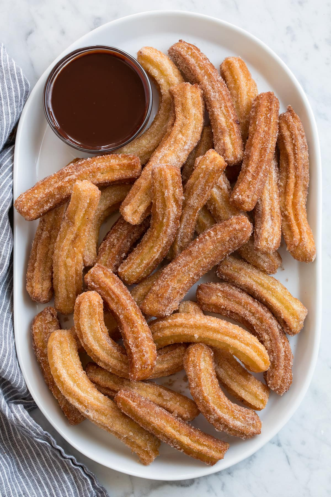

churros

bereiding
- For the coating whisk together 1/2 cup sugar and cinnamon in a shallow dish, set aside.
Heat about 1 1/2 inches vegetable oil in a large pot or deep saute pan over medium-high heat to 360 degrees. Prepare the dough while oil is heating.
Add water, butter, sugar and salt to a large saucepan, bring to a boil over medium-high heat
- Add flour, reduce heat to medium-low and cook and stir constantly with a rubber spatula until mixture comes together and is smooth (a few lumps in it are fine).
s
- Transfer mixture to a large mixing bowl, let cool 5 minutes.
- Add vanilla and egg to flour mixture then blend immediately with an electric mixer.
churro batter in mixing bowl mixing with electric hand mixer.Blend until mixture comes together and is smooth (it will separate at first but keep mixing it will come together).
- ransfer to a 16-inch piping bag fitted with a rounded star tip (no bigger than 1/2-inch).arefully pipe mixture into preheated oil, into about 6-inch lengths, cut end with clean scissors.
- Let fry about 2 minutes per side until golden brown.Transfer to paper towels to dry briefly, about 15 seconds (don’t wait too long or they’ll be dry and the sugar won’t stick as well).
- Then transfer to cinnamon sugar mixture and roll to coat.Repeat process with remaining dough (frying no more than 5 at once, separate with metal tongs if they stick a little). Let cool for a few minutes then serve warm.